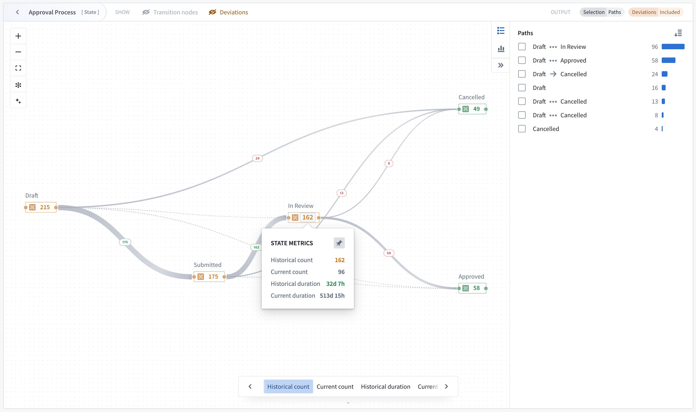
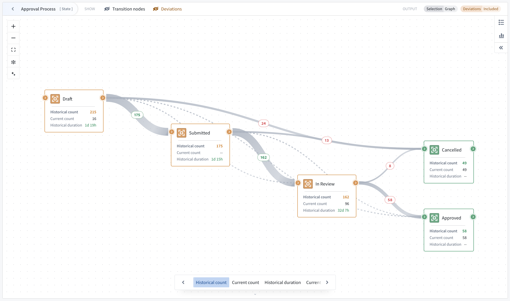
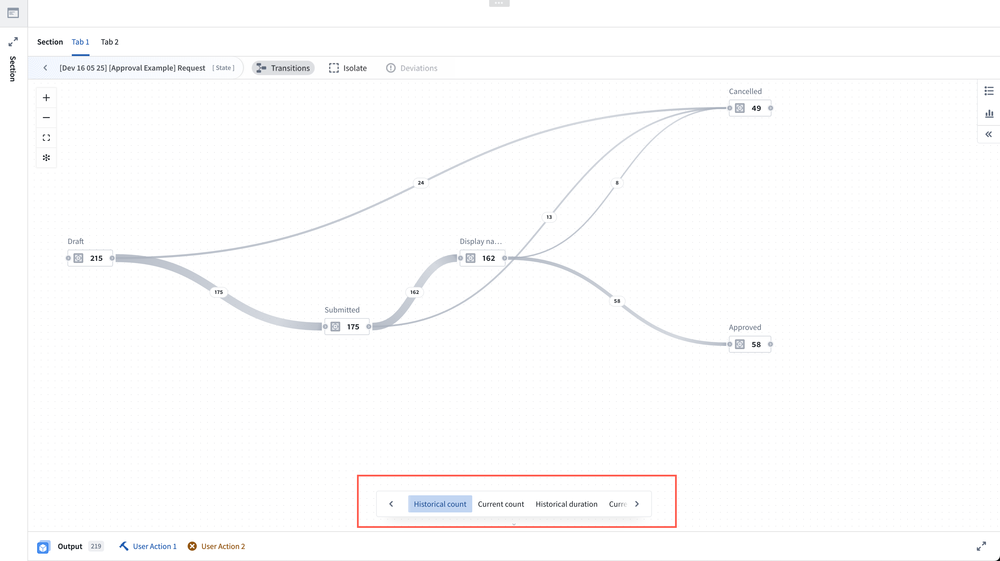
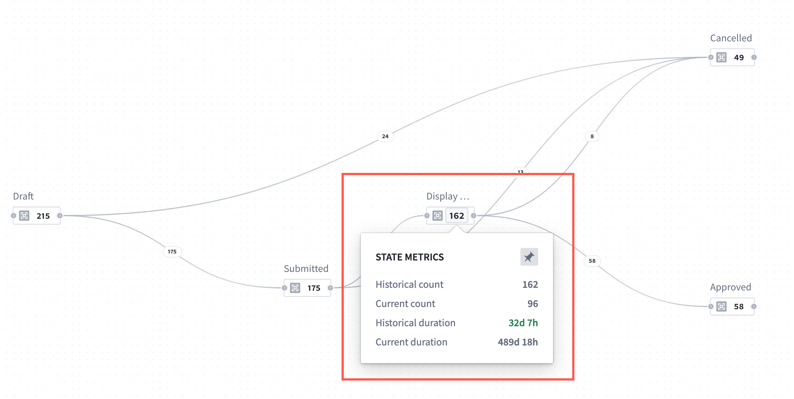
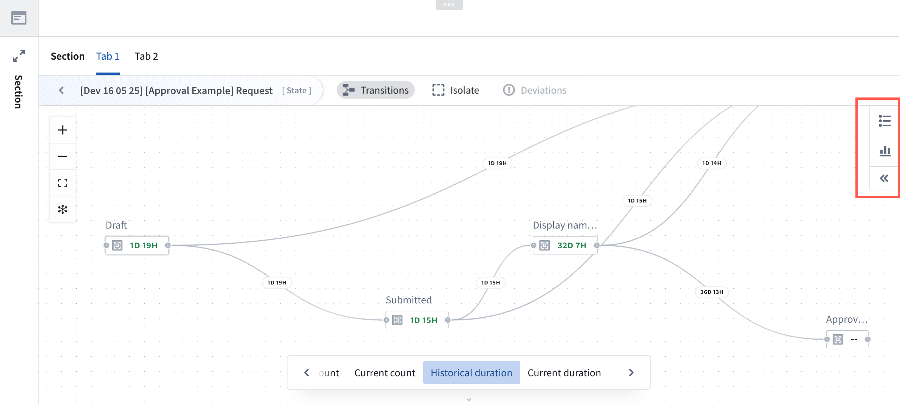
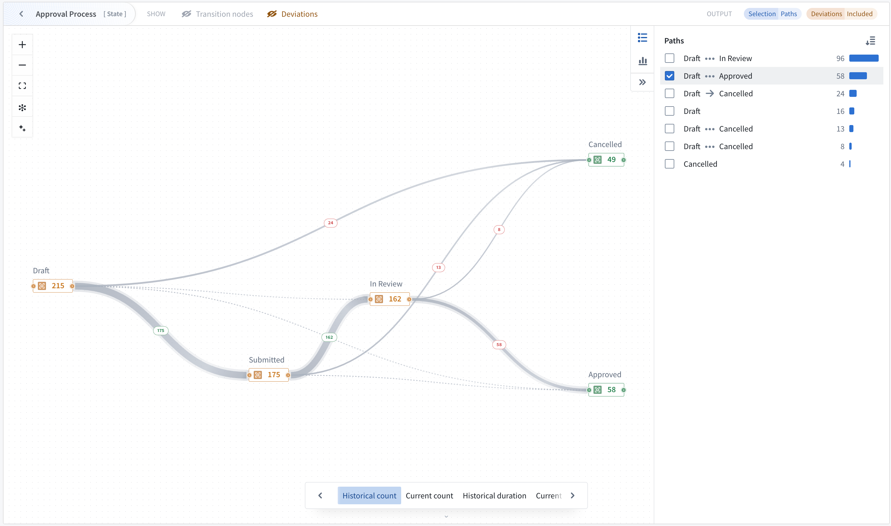
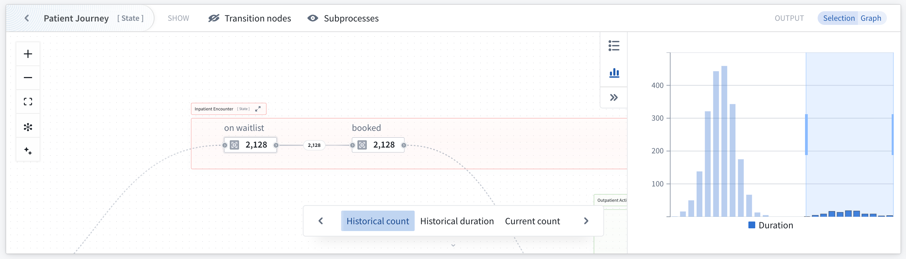

The Machinery widget provides operational insights and monitoring capabilities for your configured Machinery processes.

The widget renders your Machinery graph in Workshop applications as a visualization that can display metrics, process flows, and object distributions.
The Machinery widget is available in Workshop modules or as a stand-alone view mode in the Machinery application with limited features.
Create or open a Workshop module and select the Machinery Overview widget. The widget version v2 is selected by default and supports Machinery v2 resources. At the top of the widget configuration, select your Machinery graph resource.
New Machinery widgets will be created as v2 widgets by default. Existing widgets will need to be upgraded to v2.
Configure an input object set for each root process in your graph. The Machinery widget automatically derives subprocess object sets from the link type setup, and subprocesses have link types to their parent objects, as configured under Object type.
Example: If you provide 100 application objects, and each application is linked to multiple review objects, the widget automatically identifies all related reviews through the configured link types. This means that you only need to configure the object input for each root process of the graph (typically 1 object input).
The Machinery widget is instantiated with the following pre-configured metric views:
Application builders can add, remove, reorganize or customize these metrics views.

Custom views may also be added using the + Add item option. For each view, a builder can define one node metric with numerical formatting and conditional coloring, an optional edge metric, and enable Sankey diagram edge thickness settings.
Output datasets can be used for further analysis within the Workshop module. Configure output object sets to capture filtered results based on graph interactions:
You can change how node selection affects the object output by toggling either of the options:
Edge selection can be configured to show objects that ever went through a transition or just the last transition.
Views determine what metrics and visualizations appear in the widget. See the metric views section below for details.
A user viewing a graph in the Machinery widget can benefit from features including metric cycling and pinning, various usage modes, and filters.
The widget displays metrics in a space-efficient manner. On the graph, one node metric is visible at a time, as well as one optional edge metric if selected. If the viewport is sufficiently zoomed in, the graph will show node cards with 3 metrics, starting with the active view. If Sankey diagram edges have been configured, edge thickness is used to represent flow frequency on the Transitions view.

Users of the widget can cycle through preconfigured metric views, including historical count, current count, historical duration, and current duration. Once a view is selected, hover over any node to reveal all available metrics.

Additionally, select a node metric to pin it and keep the metrics visible for review, or select again to unpin.

By default, the widget only displays processes that conform to your process definition:
On a graph, you may focus into a desired parent process to narrow your view.
Interact with the graph to filter output object sets:
The following graph features may be enabled or disabled individually in the widget header.
With the Machinery graph open, you can toggle between the path explorer feature and the duration distribution feature located on the right side of the graph. The selected feature will open on the right side.

Analyze individual process paths and their frequency using the path explorer feature for one process at a time. To open path explorer, select the path explorer icon located on the right side of the graph.
Path explorer displays all paths taken by the currently focused process, and shows the path frequency distribution (the frequency of objects completing the path).
Hover over a path in the window to see it highlighted on your graph. You may also select one or more paths to filter the output.

Note that when path explorer is open, path selection controls the widget output and overrides previous node/edge selection.
Use the duration distribution filter to identify performance outliers and analyze time spent in states.
The duration chart responds to selection on the graph and follows configured node and edge selection options.
Selecting individual buckets or a range of buckets will filter the output object set. You can combine chart selection with graph selection to find objects with undesirable behavior, such as taking too long in an individual transition or state.
